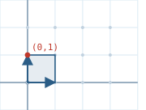
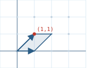
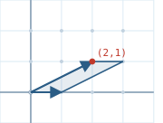
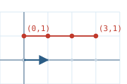

SHEAR / LEAN




text and redraw spec
SHEAR / LEAN T = [[1,1],[0,1]] (x,y) -> (x+y, y) det = 1 The shear is the move that slides each point to the right by an amount equal to its height. A point with height y moves from x to x+y, and its height does not change. The points lying on the x-axis have height zero, so they do not move at all and the x-axis is pinned in place. Because the determinant of T is 1, the area of every shape is preserved, which means no lattice point is ever created or destroyed and the lattice is sent exactly onto itself. The overall effect on the eye is that the upright grid tips over to one side, and that tipping is the reason this language also calls the move a lean. ================================================================ PROCESS - one shear per frame, tracking the unit cell ================================================================ The figure tracks a single unit square whose corners are (0,0), (1,0), (0,1), and (1,1). The shear T is applied once to reach frame 1, and applied a second time to reach frame 2. frame 0 (I) frame 1 (T) frame 2 (T applied twice) y y y 2 · · · · · 2 · · · · · 2 · · · · · 1 *--* · · · 1 · *--* · · 1 · · *--* · | | \ \ \ \ 0 *--* · · · 0 *--* · · · 0 *-----* · · O 1 2 3 4 O 1 2 3 4 O 1 2 3 4 corners: frame 0: (0,0) (1,0) (0,1) (1,1) the upright square frame 1: (0,0) (1,0) (1,1) (2,1) leaned once frame 2: (0,0) (1,0) (2,1) (3,1) leaned a second time In every frame the two bottom corners stay fixed because they sit on the x-axis. The two top corners move to the right by one unit each time the shear is applied, because they sit at height 1. The shape changes from a square into a leaning parallelogram, and the area of that parallelogram is 1 in all three frames. ================================================================ VECTOR view - track the tip e2 = (0,1) ================================================================ This view follows only the single point e2, which starts at (0,1). Each shear moves it one unit to the right while leaving its height at 1, so it walks along the horizontal line y = 1. y 1 o--->o--->o--->o (0,1) -> (1,1) -> (2,1) -> (3,1) 0 O · · · · O 1 2 3 4 The base vector e1 = (1,0) sits at height 0 and therefore stays fixed through every shear. The tracked tip keeps the same height the entire time, and only its horizontal position grows, increasing by 1 with each shear applied. That steady rightward walk at constant height is what the lean looks like when reduced to a single point. ================================================================ COORDINATE view - hold the height, watch one row ================================================================ This view holds the height fixed and watches what the shear does to an entire row of points at that height. A shear acts on a row as a plain translation, and the size of that translation is set by the height of the row. row at height 0 : every point stays in place (the pinned row) row at height 1 : every point shifts right by 1 per shear row at height 2 : every point shifts right by 2 per shear Each row slides to the right by its own height multiplied by the number of shears applied. The row at height 0 never moves, the row at height 1 moves a little, and each higher row moves further than the one below it. When the rows are stacked back into a single picture, the differing shifts are what make the column of points lean. ================================================================ ARRIVAL - the structure the shear settles toward ================================================================ The shear T has a single eigenvalue equal to 1, and its eigenvector is (1,0), which points along the x-axis. Repeatedly applying the shear pushes every cell toward that horizontal direction, so the leaning parallelogram grows longer and flatter with each step. The cell never folds flat or turns inside out, because the determinant stays exactly 1 and area is preserved at every step. The pinned line y = 0 is the direction everything leans toward, and it is the arrival of this process. To redraw the whole move by hand, plot the origin and the x-axis, then mark one point at height 1. Move that point one square to the right for each step. Marking that single walking point is enough to capture the entire shear.